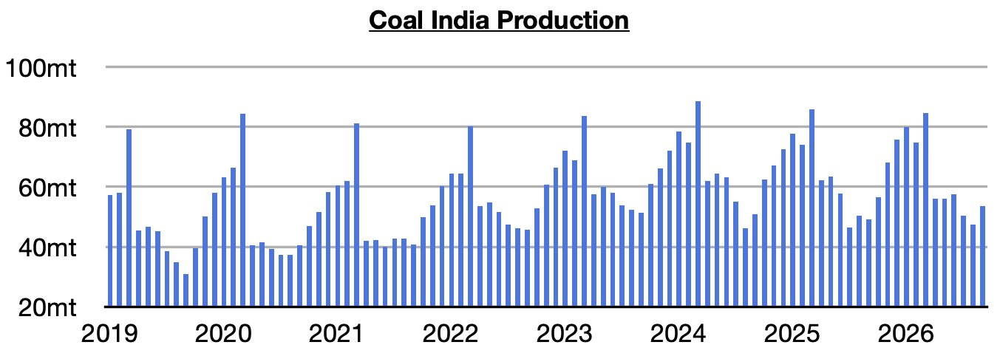
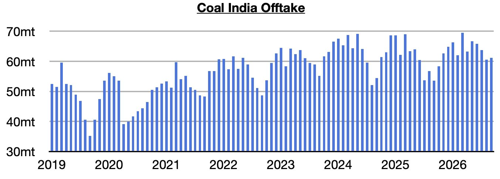
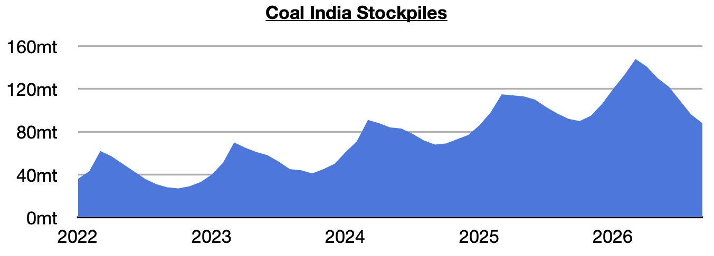

As we discussed in Commodore Research's most recent Weekly Executive Report, Coal India produced approximately 53.5 million tons of coal last month (Coal India is responsible for over 75% of India’s coal output). This is up month-on-month by 6 million tons (13%) and up year-on-year by 4.5 million tons (9%). Previously, Coal India’s production had contracted on a year-on-year during five of the prior six months.

Offtake (the amount sent to customers) totaled 61.2 million tons. This is up month-on-month by 600,000 tons (1%) and up year-on-year by 7.6 million tons (14%). Offtake has now increased on a year-on-year basis for five straight months. Previously, it had contracted on a year-on-year basis in seven of the prior eight months.

With offtake again coming in above output, India’s stockpiles have fallen further. They now stand at approximately 88 million tons. This is down month-on-month by 8 million tons (-8%) and down year-on-year by 4 million tons (-4%). Prior to the last six months, stockpiles had increased for five straight months. Stockpiles are now at their lowest level since January 2025.
